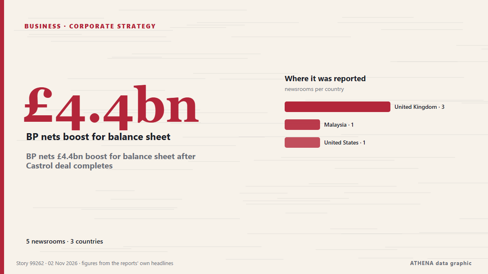

استراتيجيات الشركات
برعايةبرعاية  Cybernetics and Artificial Intelligence Lab Welcome to the Cybernetics and Artificial Intelligence Laboratory, established at the Department of Business Administration of the National
Cybernetics and Artificial Intelligence Lab Welcome to the Cybernetics and Artificial Intelligence Laboratory, established at the Department of Business Administration of the National
| 20 أكتوبر | 0 |
|---|---|
| 21 أكتوبر | 0 |
| 22 أكتوبر | 0 |
| 23 أكتوبر | 0 |
| 24 أكتوبر | 0 |
| 25 أكتوبر | 0 |
| 26 أكتوبر | 0 |
| 27 أكتوبر | 1 |
| 28 أكتوبر | 3 |
| 29 أكتوبر | 9 |
| 30 أكتوبر | 4 |
| 31 أكتوبر | 3 |
| 1 نوفمبر | 1 |
| 2 نوفمبر | 3 |
تُعرض العناوين بالإنجليزية كما نُشرت.

BP nets £4.4bn boost for balance sheet after Castrol deal completes
The oil group said it would use the net proceeds to bolster pay down debts. من The Irish News (Belfast)
Oil giant Aramco takes 49% stake in Saudi AI company
Aramco will inject about US$2.6 billion in cash and assets into Humain as the AI firm seeks to expand its capabilities and meet rising demand. من Free Malaysia Today
French MPs vote for a €0.055 tax on every gigabyte sent to users
France’s National Assembly has voted to tax companies for every gigabyte of data they send to French internet users. من The Next Web
MacGregor secures retrofit contract for 35 Wallenius Wilhelmsen vessels
MacGregor has secured a contract to upgrade Programmable Logic Controller (PLC) systems aboard 35 Pure Car and Truck Carrier (PCTC) vessels operated by Wallenius Wilhelmsen. من Container News
Waymo picks Toyota bZ4X as its next robotaxi, starting in Japan in 2027
Waymo is adding the Toyota bZ4X to its robotaxi lineup. من Electrek
Environmental defenders testify about attacks in Latin America linked to Canadian mining companies
The Inter-American Commission on Human Rights heard testimony Oct. من Mongabay
Apple overtakes Nvidia to become world's most valuable company at $5.03 trn
According to a report by Bloomberg, Apple’s market capitalization stood at $5.03 trillion on Friday. من TASS (English)
South Africa’s Absa opens first Gulf office in Dubai to tap $158bn UAE-Africa trade boom
The office will connect Gulf-based companies, investors and financial institutions with Absa’s operations across 16 African markets. من Arabian Business
Lynas locks in price floors as revenue jumps 55%
Lynas is using dysprosium and terbium supplies to help secure longer-term relationships with magnet makers. من MINING.COM
Villa Vie Odyssey stranding puts Cambodia back in global headlines
The stranding of the Villa Vie Odyssey amid soaring fuel costs has again drawn global media attention to Cambodia after the MS Westerdam’s arrival during the Covid-19 pandemic and highlighted… من Khmer Times
Russia’s Rusal plans to mine bauxite in Ghana – RIA
Russian aluminium giant Rusal plans to establish a joint venture in Ghana to mine and process bauxite, the raw material used to produce aluminium, Russia's RIA state news agency reported, citing a… من MyJoyOnline
Polymarket confirms cyberattack on third-party provider after outages
The company suffered outages starting at 2 p.m. من The Record (Recorded Future News)
BP profits hit 18-year high as Iran war drives up oil refining margins
Around quarter of EU refineries have shut down over past 2 decades, reducing domestic refining capacity by around 10%, while divestments have accelerated across Europe, says Dan Jorgensen. من Anadolu Agency (English)
Amazon posts 3rd quarter results that fall short of Wall Street’s expectations
Amazon offered a cautious sales outlook for the current fourth quarter that encompasses the critical holiday shopping period after delivering fiscal third-quarter results that came in below Wall… من Fast Company
Carlyle and EBRD agree to sell Black Sea Oil & Gas to Mazarine Energy
Global investment firm Carlyle and the European Bank for Reconstruction and Development (EBRD) have agreed to sell Black Sea Oil & Gas (BSOG), Romania’s largest offshore natural gas producer, to… من Business Review (Romania)
2PointZero Group's nine-month profit triples as global expansion gathers pace
CRDB Bank Group’s profit after tax rose 29.1 per cent to 672.07bn/- in the nine months to September, driven by growth in lending and customer deposits. من Daily News
Türkiye’s Q3 Tourism Revenues Rise 5%, Minister Sees Full-Year Topping $65 Billion
Departing visitors decline 1.6% year-on-year to 23.26M, with average nightly spending at $107. من Anadolu Agency (English)
One private equity–backed company owns every methadone clinic in Montana
In plain terms: Private equity firms haven’t been building new capacity – they’ve been buying up the capacity that already existed. من Fortune